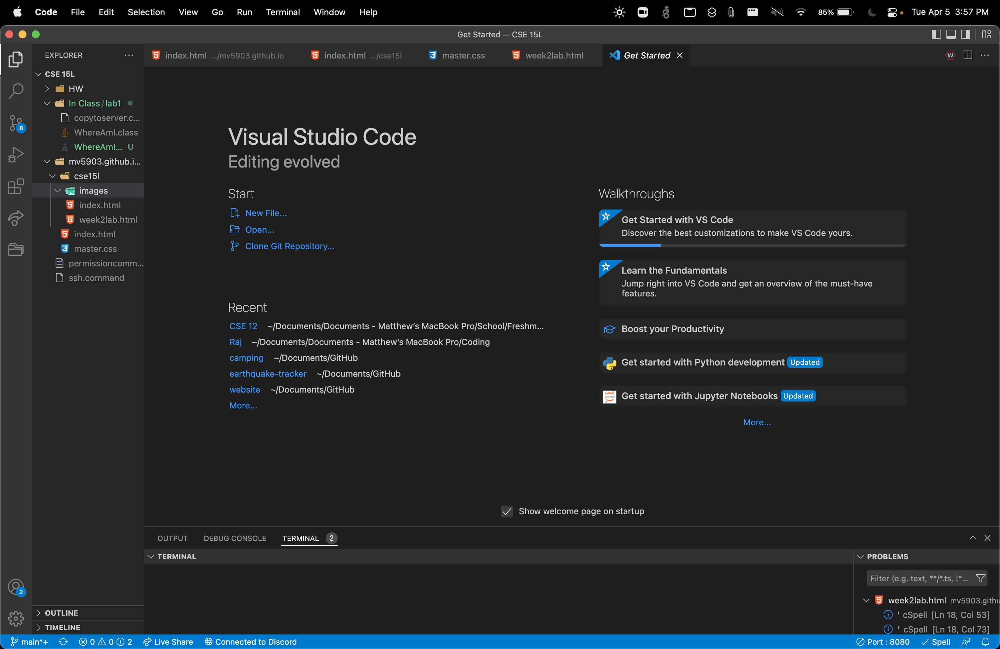

To download Microsoft Visual Studio Code, you can navigate here. It is a free Interactive Development Environment (IDE) and is one of the most widely used ones as well. Be sure to select the appropriate version for your machine! Once installed, you should see a page that looks like this:
In general, the ssh command is used to securely connect to another computer running either on your local network or outside it. In order to start using the command, you must go to Terminal->New Terminal to open a terminal inside of VSCode. Then, the syntax of the ssh command is as follows: ssh [user]@[server] where user is your username on the computer, and server is the server your are attempting to connect to. On success, you should see a message in your terminal that looks like the following:
There are many commands that we can use in the terminal, but here are a few notable ones:
cd - change directory that your terminal is working fromls -[flags] - list all folders and files in the working directory. Optional flags include:
-a - include hidden files and folders-l - long format which includes information such as permissions-t - sort by time and datecp [from] [to] - copy (locally) a file from one folder to anotherThe scp command is used to move files from a local machine to a server, hence the 's' indicating secure copy. This is difference from cp because cp is an insecure command just to move files around on your current machine. To use scp, use scp [path to file you want to copy on your machine] [ssh user@destination]:[path]. To copy a file to the home directory on the server for example:
You will see 100%, indicating that the command ran successfully.
An SSH key is used to create a key, unique to your device, that you can put on the server to allow you to log in without using a password. To create one, use ssh-keygen. Be sure to not enter a password when asked for one, just press enter. You can then move the key over with the scp command mentioned previously. Be sure to put it into the authorized_keys folder inside of that home directory on the server. See below for an example:
Let's say you have a .java file that you want to run on a server, but you prefer to make the changes on your machine. It would be a lot to type out the scp command, log into ssh, compile with javac, and run with java. Instead of typing out four separate commands, you can combine them into one. Chain using two ampersands (&&), and any commands you want to run on the server you should put between quotes ("). For example: